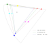
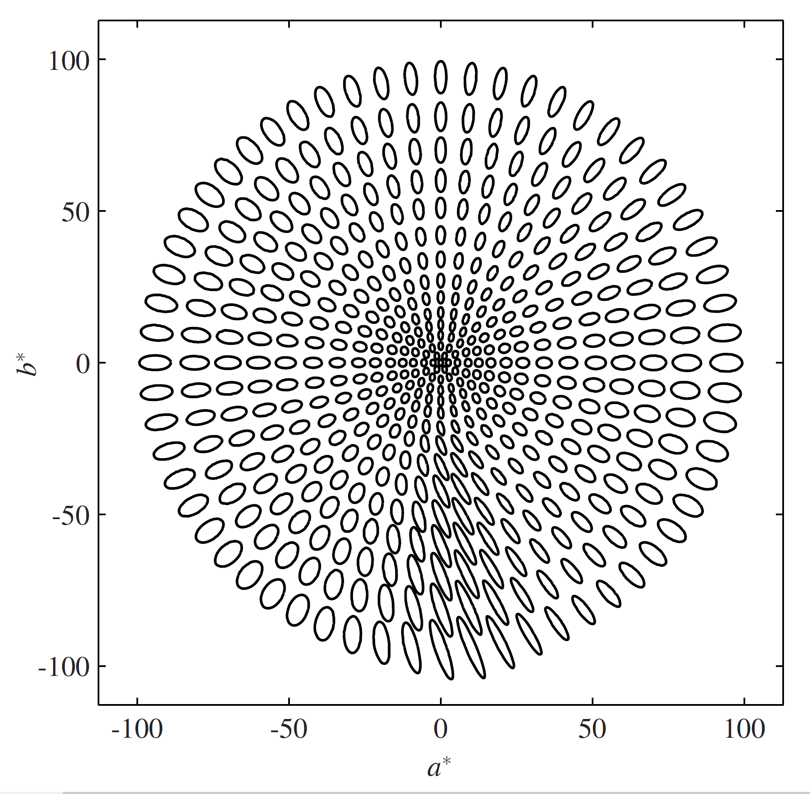

Published on
So, CSS Color 4 adds Wide Color Gamut colors to CSS. But what is a gamut, anyway?
The gamut of a color space is the range of colors that can be represented, given the constraint that color component values can't be negative or greater than 100%.
That is a complete definition but if you really want to understand, in depth, what that means, the rest of this blog post is for you.
Color space of a display
While it is certainly possible and reasonable to use component values outside that range [1] (the math still works, for example for for mixing colors), the time comes when a color value has to be actually presented to the user (on a display, or printed) and at that point these constraints are purely physical: you can't display more than some maximum amount of light (100%), and you certainly can't suck light back in (negative values).
Which brings us to the concept of displays, standard ones and wide gamut ones. (There are also ultrawide gamut ones, as we will see shortly). All displays can produce a white, and a black [2]; so the difference between them is the limit on how colorful (bright, saturated, vibrant) the displayed colors can be. This quantity is called chroma, and the maximum chroma of a display varies with hue.
Show me the gamut
Well, now we have a problem. There you are, somewhere on the internet, but not here with me so I can't point to two monitors and say “see the difference?” nor do I know if you have a wide gamut monitor [3] so I can't use a wide gamut, ICC-tagged image to show you, on your monitor.
The next-best thing would be to show you a 3D rendering of the color gamut, plotted in some perceptually-uniform colorspace like CIE Lab or, better, OKLab.
However, comparing the internal structure of two 3D models (ideally, we want to see the intersection of the two volumes) is difficult.
Plot the gamut: chromaticity diagrams
Reluctantly we turn to 2D diagrams, which are a whole lot easier to create and examine (but, as we will see later, can be actively misleading). The most commonly used one is called the x,y chromaticity diagram and it looks like an elongated horseshoe. Less commonly, the u,v chromaticity diagram is used, which looks like a broader horseshoe [4]. Here is one:
OK what are we looking at here.
Gamut triangles
Well there are three triangles, and each one has a red corner, a green corner, and a blue corner.
The smallest triangle, drawn in blue, shows the highest chroma colors that can be mixed with some combination of the red, green and blue primaries used in High Definition Television (HDTV), which is defined by ITU standard BT.709. Oh and, more relevant for Web developers, the same range of colors is produced by the sRGB standard, which from the birth of the Web up until 2016 was the best you could get on the Web. It also represented the typical gamut of CRT and LCD screens, (except for very expensive special-purpose ones), up until 2014 or so.
The medium sized triangle, drawn in green, shows the highest chroma colors that can be mixed with some combination of the red, green and blue primaries used in reference Digital Cinema projectors which is defined by the DCI P3 standard. The same primaries [5] are used by Display P3, a wide gamut color space which has increasingly (since 2015 or so) become the design target for moderately wide (but not ultrawide) gamut displays on everything from laptops to phones to smart watches. Display P3 also describes the gamut of the typical reference monitor used in creating and grading content for TV and movies.
The largest triangle, shown in red, illustrates the ultrawide gamut of another broadcast standard, ITU standard BT.2020. Content for Ultra HD (4k and 8k) TV and streaming services is typically transferred using the BT.2020 primaries [6] although currently, the full gamut is rarely used. Indeed there are significant problems creating a physical display with those primaries [7].
The reason we are able to use just two dimensions here is that Luminance, or Lightness, has been factored out. If you have two colored lights, identical except one is twice as bright, they will have the exact same chromaticity and be plotted at exactly the same point on this diagram.
Additivity and chromaticity diagrams
Now to point out some things which might seem obvious, but have important consequences. The three triangles use straight lines, not curved ones. The secondary colors yellow, cyan and magenta lie exactly on those lines. These are consequences of Grassman's Additivity Law [8] and the chromaticity diagram was specifically designed to preserve additivity.
And thus, given the chromaticity of any two colored lights (there is nothing special about red, green and blue) the color produced by mixing them will lie on the straight line connecting them. Indeed, before the advent of widely available computers, this is how color mixtures were predicted for things like stage lighting: by drawing chromaticity diagrams on graph paper.
So we can correctly say that, if a color is outside the traingle describng the gamut of a particular monitor, that color cannot be displayed (is out of gamut) for that monitor. Because there is no positive combination of the primaries that could produce it.
What we can't say, though, is that if a color is inside a given triangle, it is in gamut. It might be, but it also might be too bright or too dark to be mixable by some posiive combination of the primaries.
And this is why statements (often found in adverts) [9] that a particular monitor covers “95% of the gamut of” some target gamut are bogus. They are simply calculating the area of the intersection of two triangles, while assuming that all colors inside the triangle are in gamut. (We will see a practial demonstration of this later on).
The spectral locus
Enough about triangles. What about that curved loop around the outside? This represents the boundary of human vision or, if you like, the gamut of the human visual system. Points outside that loop are imaginary colors. No physical color can have a chromaticity outside that loop.[10]
Each point on the curve corresponds to a specific single wavelength, going from the deepest but darkest reds (conventionally at at 780nm, although wavelengths greater than 680nm are increasingly dark; wavelengths greater than 780nm are infra-red and thus, invisible) through oranges, yellows at 575nm, greens from 560 to 500nm, blues to 450nm then increasingly dark violets to 380nm. (Wavelengths shorter than 380nm are ultra-violet and thus, invisible).
The straight line joining the two ends of the loop corresponds to the additive combination of two colors: the deepest red, and the deepest violet. It thus represents purples.
Note that it is not possible to accurately display the colors along the spectral locus, They are all outside the gamut of an sRGB display (indeed, all but three points are outside the gamut of Rec BT.2020). It is however possible to convert the color of each wavelength to CIE XYZ [11] and then produce an approximate, highly desaturated, version [12] of that color.

(Lack of) perceptual uniformity, and chromaticity diagrams
So far we have been concentrating on the good part of chromaticity diagrams – additive color mixtures lie on straight lines.
We already learned that lightness has been factored out. What other problems are there?
You may well have been tempted, looking at the diagram of the three display gamuts, to start comparing distances. The Display P3 green looks fairly close to the sRGB one, while the Rec BT.2020 one looks further away. In other words you probably assumed (and you would not be the only one) that the distance apart of two points corresponds exactly to how different the two colors look.
Sadly, that is not the case at all.
It used to be worse (the old x,y chromaticity diagram was hugely stretched out in the green area) but is still not great (the u',v' diagram under-estimates distances around yellow, and over-estimates distances in the blue to purple area).
If we want to compare the sizes of two gamuts (and without going to three dimensions) can we do any better?
Yes, we can.
The OKLab (OKLCH) color space
CIE Lab
Since 1976, the CIE Lab color space which is available in CSS Color 4 has been the go-to perceptually uniform space. It has a lightness axis which goes from 0 (black) to 100 (white) and, by design, the grey at L=50 is exactly mid-way, visually.
There are also a and b axes, which it is easier to understand and use in terms of polar coordinates: hue angle (angle from the positive a axis) and chroma (distance from the central neutral axis, in other words a measure of colorfulness (or saturation) [13]).
So the distance between two points is supposed to directly relate to how different the colors appear and that is true, up to a point. But then people started making ever-more-complex color difference formulae [14] to account for the non-linearities:
- over-prediction of color differences at high chroma
- breakdown of hue-linearity for blues (they become purple as chroma is reduced)
- skewing of blues away from the neutral axis
because they were finding a simple geometric-distance error metric gave inaccurage preictions and at some point, it looked like a better bet to fix the problem at source: just make a new color space, broadly the same as Lab/LCH but without the problems [15].
To illustrate the problem, here are some circles of constant deltaE2000 radius, in CIE Lab:
No, those don't look like constant-sized circles to me, either.
OKLab to the rescue
Invented by Björn Ottosson [16] in 2020, OKLab works much like CIE Lab in that there is a central lightness axis, a and b chromatic axes, which are more easily manipulated as chroma and hue. But it does a better job of being perceptually uniform, so much so that we can go back to a simple, geometric-distance color difference formula.
Now this is a three-dimensional space, but we can draw a gamut in two dimensions by projecting onto the a,b plane. Like this:
Here we have the same three display gamuts – sRGB, Display P3, and Rec BT.2020 – drawn on the OKLab a,b plane. The distances between points now directly relate to how different the colors are, which means we can finally compare the range of highest-chroma colors that can be displayed.
Notice too that this is not additive; the secondary colors don't lie on straight lines connecting the primaries.
We start to see that Display P3 is indeed significantly bigger than sRGB. We can see that the cyan secondary in sRGB is really very low chroma (which is why swinging out of gamut is such a problem for cyans) and how Display P3 helps there.
And of course we see that Rec BT.2020 is so much bigger than either of them.
Which brings up the question of how big a gamut do we actually need?
But that is for a follow-up post.
Geeknotes
All the Predefined Color Spaces in CSS Color 4 are defined over the extended range. You can use negative values, or values greater than 1 (100%).
So finding out of gamut colors is easy: they use negative values, or values greater than 1.0:
↩︎color(display-p3 1 1 0) is color(srgb, 1.0 1.0 -0.346)To a first approximation. All displays reflect some of the ambient light in the room, called viewing flare. This mixes a tiny bit of white light in with the displayed black, making it lighter than a true, luminance = 0, black.
For CMYK printers, the problem is even worse: they can't print a rich, deep black and in fact the ICC profile for that printer will have a measurement of the deepest black that can be printed, using 100% of black ink and a fair bit (around 30%) of cyan, magenta and yellow as well. Let's ignore printers for now, though. ↩︎
There is a
color-gamutmedia query which has three possible values:srgb,p3andrec2020which are broad categories meaning normal, wide, and ultrawide respectively. So you could try:@media (color-gamut: p3) {
// do some wide gamut stuff here
}Currently implemented in Safari and Chrome, but not yet in Firefox.
I said these are broad categories: a display that can reproduce most of Adobe 1998 RGB, for example, but covers less than 90% of Display P3, will still match the p3 media query. ↩︎
The u,v chromaticity diagram, dating to 1976, improves on the old 1931 x,y chromaticity diagram. It is a bit more perceptually even (but not much). If you want to play with these, the equations are very simple:
function XYZ_to_uv(XYZ) {
// Convert an array of three XYZ values
// to u*,v* chromaticity coordinates
let [X, Y, Z] = XYZ;
let denom = X + 15*Y +3*Z;
return [4*X / denom, 9*Y / denom];
}color.js has a function to compute u,v values for you, starting with any color in any color space. ↩︎
The same primaries, but not the same white, or transfer function, or viewing conditions. On a chromaticity diagram though DCI P3 and Display P3 draw the same triangle. ↩︎
Standard Dynamic Range (SDR) content uses BT.2020. High Dynamic Range (HDR) uses BT.2100, which has the same primaries as BT.2020. So the gamut is the same, in terms of hue and chroma; but the brightnesses possible are very different. ↩︎
All three primaries are right on the spectral locus, which means they are single-wavelength sources at 630nm, 532nm, and 467.1nm. They are physically realizable, for example by three lasers, but getting the requisite purity is difficult. This also means that they exacerbate observer metamerism, the individual small differences between people with normal color vision; and they tend to suffer from speckle, a wavering shimmering effect with very high-purity lights.
For people with protanopia (a form of atypical color vision, often called “color blindness”) the red primary will be very dim, and possibly invisible. ↩︎
Originally described by Grassman in 1853 on the basis of color matching experiments, and succinctly restated by Wyszecki and Styles (2000):
- Symmetry Law If color stimulus A matches color stimulus B, then color stimulus B matches color stimulus A.
- Transitivity Law If A matches B and B matches C, then A matches C.
- Proportionality Law If A matches B, then x A matches x B, where x is any positive factor by which the radiant power of the color stimulus is increased or reduced, while its relative spectral distribution is kept the same.
- Additivity Law If A, B, C, D are any four color stimuli, then if any of two of the following three conceivable color matches A matches B, C matches D, and (A + C) matches (B + D) holds good, then so does the remaining match (A + D) matches (B + C) where (A + C), (B + D), (A + D), (B + C) denote, respectively additive mixtures of A and C, B and D, A and D and B and C.
As usual there are some caveats for the laws to hold true:
- All color matches must be made under similar viewing conditions.
- The eye's previous exposure to light affects the state of adaptation, influencing the spectral sensitivity of the eye.
- If a field diameter larger than 10° is used in a color match, a failure of the proportionality law may be found.
“A popular method to evaluate display gamuts is to compare the triangle area connecting the chromaticity points of the RGB primaries to those of some standard RGBs on the CIE xy or u′v′ chromaticity diagram. It is easy to calculate the area, and most display manufacturers define color gamut coverage in areal dimensions. However, it is not reasonable that the whole area is taken into account even if the triangle protrudes outside the standard RGB ones to be compared. Further, some manufacturers exploit their advertisement of the larger ratio calculated in the two diagrams to market their product.”
Kenichiro Masaoka et. al. Designing display primaries with currently available light sources for UHDTV wide-gamut system colorimetry Optics Express Vol. 22, Issue 16, pp. 19069-19077 (2014) ↩︎
In the same way that mathematics can do useful things with imaginary numbers, color science can do useful things with imaginary colors. Examples include the ProPhoto RGB color space add diagram ↩︎
The CIE 1931 2-degree observer color matching functions (CMF) consists of a table of three numbers (xbar, ybar, zbar) at 1nm intervals. Normaly, to convert a measured color spectrum to CIE XYZ, the spectrum amplitude is multiplied by the color matching functions and these values are summed over all wavelengths.
In this case, where only a single wavelength is used, the (xbar, ybar, zbar) values at that wavelength can simply be used directly as XYZ. Here is a quick and dirty program to do that:
↩︎<!DOCTYPE html>
<meta charset="utf-8"></meta>
<script src="./multiply-matrices.js"></script>
<script src="./conversions.js"></script>
<script src="./utilities.js"></script>
<script src="./spectral_locus.js"></script>
<script src="./CMF.js"></script>
<script>
// line up the arrays. Luckily they are both 1nm spacing
let CMFstart = CMF_1931_2degree[0][0];
let locusStart = spectral_locus_uv[0][0];
let locusEnd = spectral_locus_uv[spectral_locus_uv.length-1][0];
let offset = CMFstart - locusStart;
// un-gamut-mapped sRGB colors
let results = [];
// individual color
let testXYZ = [];
for(let wavelength = locusStart; wavelength < locusEnd; wavelength++) {
let testXYZ = [];
testXYZ = CMF_1931_2degree[wavelength - CMFstart].slice(1);
let testRGB = gam_sRGB(XYZ_to_lin_sRGB(testXYZ));
results.push(`[ ${testRGB[0]}, ${testRGB[1]}, ${testRGB[2]} ],`);
}
console.log(results.join("\n"));
</script>
<p>View console for an array of sRGB coordinate values for the spectral locus
at 1nm intervals from 380 to 700nm. They will need to be gamut mapped for display.</p>The XYZ values are then converted to sRGB for display; the values are all out of gamut and so they must be gamut mapped (their chroma is reduced, keeping lightness and hue constant, until they are in gamut).
We can combine that with a table of the u'v' coordinates at each wavelength to generate some SVG polylines to make the diagram. Here is what I threw together to do that:
↩︎<!DOCTYPE html>
<meta charset="utf-8"></meta>
<script src="./spectral_locus.js"></script>
<script src="./tongueColorsUnMapped.js"></script>
<script src="https://colorjs.io/dist/color.global.js"></script>
<script>
let offset = 380;
let result = [];
for (let wavelength = 380; wavelength < 700; wavelength++) {
let i = wavelength - offset;
let c = new Color("sRGB", tongueColorsUnMapped[i]);
Color.toGamut(c);
result.push(`<polyline points="${spectral_locus_uv[i][1]},${-1*spectral_locus_uv[i][2]} ${spectral_locus_uv[i+1][1]},${-1*spectral_locus_uv[i+1][2]}" stroke="rgb(${100*c.coords[0]}%,${100*c.coords[1]}%,${100*c.coords[2]}%)"/>`);
}
console.log(result.join("\n"));
</script>
<p>View console for set of SVG polylines for the spectral locus
at 1nm intervals from 380 to 700nm. They have been gamut mapped for display.</p>A surface of equal chroma is a cylinder in Lab space while a surface of equal saturation is a cone with the apex at black, because Saturation = Chroma / Lightness. More details
Come on let me play fast and loose with illustrative terminology before this blog post turns into a novel. ↩︎
Culminating in deltaE 2000, which is really pretty accurate but also remarkably complex and often implemented incorrectly. ↩︎
I covered the problems with CIE Lab (specifically in the case of gamut mapping), the search for a better color space, and the eventual selection of OKLab, in a presentation at the W3C Color workshop in September 2021 ↩︎
Björn Ottosson (2020) A perceptual color space for image processing. https://bottosson.github.io/posts/oklab/ ↩︎